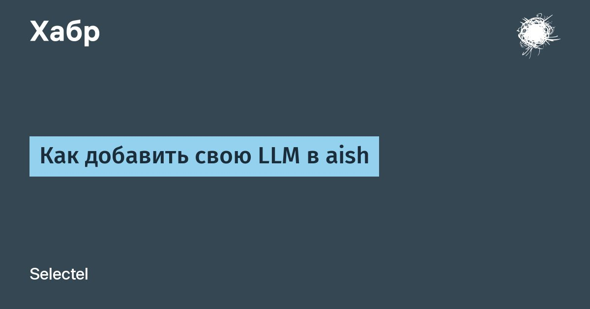

Как добавить свою LLM в aish
Привет, меня зовут Наташа, я менеджер проектов в Selectel.
Недавно я рассказывала, как и зачем мы создавали aish — ИИ-агента в терминале серверной ОС.
Предлагаю перейти к практике и подключить к нему стороннюю LLM.
В этой статье покажу, как выбрать подходящую модель, правильно ее настроить и избежать типичных ошибок при интеграции.
Читать далее